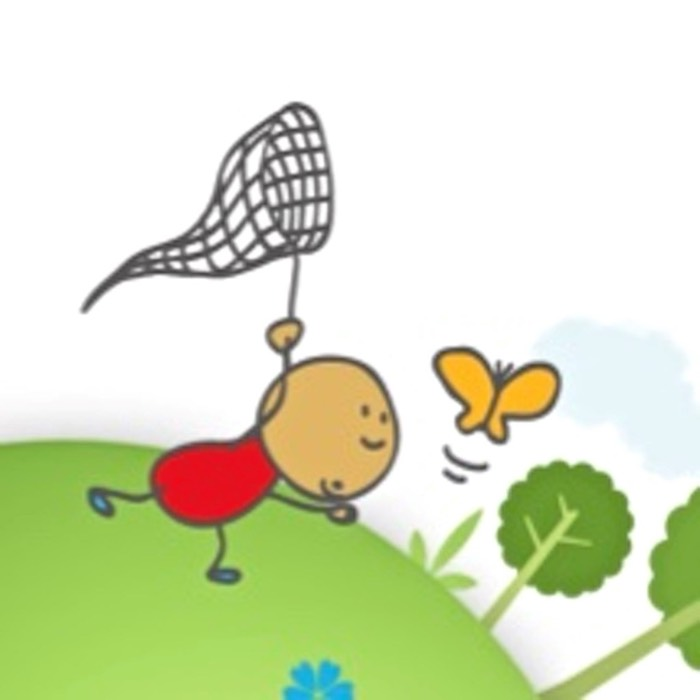

الوصول
حارس الأمن عند الباب، والدخول عبر الإنتركم. في الأيام الأولى اتركوا طفلكم ساعة أو ساعتين، ثم زيدوا المدة تدريجياً. ويمكنكم الانتظار في غرفة الأهالي مع كوب من الشاي أو القهوة.
حضانة بريطانية في المرخية بالدوحة، للأطفال من عمر 3 أشهر إلى 4 سنوات. نتبع منهج المرحلة التأسيسية البريطاني (EYFS)، ونرعى الصغار في قطر منذ عام 2008.
مفتوح من الأحد إلى الخميس 6:30–3:30قرب توار مولواتساب 6602 8092

بيتهم الثاني، مكان يضحك فيه صغاركم ويتعلّمون في جو من المحبة والراحة والأمان.

صفوفنا وساحات اللعب عندنا مشرقة وملوّنة ونظيفة وواسعة.
وفريقنا رائع: عدد كبير من المعلّمات المدرَّبات والمخلصات، وكثيرات منهن أمهات، وكلنا نحب الأطفال. ونسبة المعلّمات إلى الأطفال عندنا من الأفضل في قطر (من دليل أولياء الأمور).
نفتح أبوابنا مبكراً من أجل الأهالي العاملين، ونغلق الساعة 3:30 عصراً.
حارس الأمن عند الباب، والدخول عبر الإنتركم. في الأيام الأولى اتركوا طفلكم ساعة أو ساعتين، ثم زيدوا المدة تدريجياً. ويمكنكم الانتظار في غرفة الأهالي مع كوب من الشاي أو القهوة.

حروف وأرقام وأشكال وألوان، وحلقة الصباح والأناشيد. ويتعلّم الطفل أكثر حين يستمتع.
ترسلون مع طفلكم وجبة خفيفة صحية ومشروبين، ونملأ له قارورة الماء كلما احتاج. الغداء الساعة 12:00، وتايني تاون حضانة خالية من المكسرات.
ألعاب الكرة وأحجار القفز واللعب بالماء في موسمه، ثم الرسم والأشغال اليدوية والقيلولة. ولا نسلّم الطفل إلا للأشخاص الذين تكتبون أسماءهم.
أحياناً يكون منظّماً وتحت الإشراف، وأحياناً وقتاً حراً يأخذهم فيه خيالهم إلى عوالم جديدة.
تبدأ بحروف وأرقام بسيطة، وهي مفاتيح القراءة والكتابة وفهم العالم من حولهم.
رسم وقص ولصق، ومتعة أن يصنعوا شيئاً خاصاً بهم.
من حلقة الصباح والأناشيد إلى القراءة التفاعلية والحوار، نشجّعهم على التعبير عن أنفسهم.
الأخلاق الطيبة واحترام الآخرين، ليكبر كل طفل مستقلاً وواثقاً بنفسه.
نعلّمهم لماذا يهمّ الأكل الصحي للعقل والجسم، ونستمتع معهم بتحضير وجبات صحية وخَبز بعض الكوكيز.
ارتداء الأزياء وتمثيل المهن، وزيارات من طبيب أسنان وطبيب بيطري ومسعفين.
فرصة جميلة ليتعرّفوا على البلد الذي يعيشون فيه، مع معلّمة متخصصة تعرّفهم باللغة العربية وثقافتها بأسلوب لطيف.
لا ننسى أبداً أهمية المرح البسيط. ففي النهاية، هم أطفال!
هذا ما نلتزم به كل يوم، لتذهبوا إلى أعمالكم وأنتم مطمئنون.
نرعى الأطفال في قطر منذ عام 2008.
من 106 تقييمات على خرائط Google.اقرأوا التقييمات
من السفارة البريطانية، وحاصلة على شهادة تميّز من وزارة الشؤون الاجتماعية.(من دليل أولياء الأمور)
للأطفال من 3 أشهر إلى 4 سنوات، يومين أو ثلاثة أو خمسة أيام في الأسبوع. القبول حسب توفّر الأماكن.
اتصلوا على 4483 4553 وتفضّلوا بزيارتنا. شاهدوا الصفوف وتعرّفوا على المعلّمات واسألوا عن كل ما تريدون.
فيه رسوم هذا العام ومواعيد الفصول الدراسية واستمارة التسجيل. والدفع عن كل فصل يمنحكم خصماً بنسبة 5%.
مبنى 6، شارع 992، المرخية، الدوحة
قرب توار مول. اضغطوا زر الإنتركم عند البوابة.
| الأحد | 6:30 ص – 3:30 م |
| الإثنين | 6:30 ص – 3:30 م |
| الثلاثاء | 6:30 ص – 3:30 م |
| الأربعاء | 6:30 ص – 3:30 م |
| الخميس | 6:30 ص – 3:30 م |
| الجمعة | مغلق |
| السبت | مغلق |